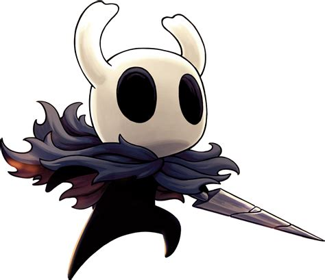

El Caballerito

Este no tiene nombre, pero la comunidad lo llama "Ghost"
Historia: Despues de que su padre, el Rey Palido, buscara a un ser sin sentimientos, pensamientos ni voz para sellar a un enemigo, decidio tener descendencia con la Dama Blanca para buscar al perfecto ser. Despues de un tiempo y millones de hijos muertos, encontro al perfecto, aunque no era Ghost, sino otro, el Hollow Knight. Al final, este es abandonado en El Vacio, pudiendo escapar y decidido a heredar el sello para mantener al mundo en paz.